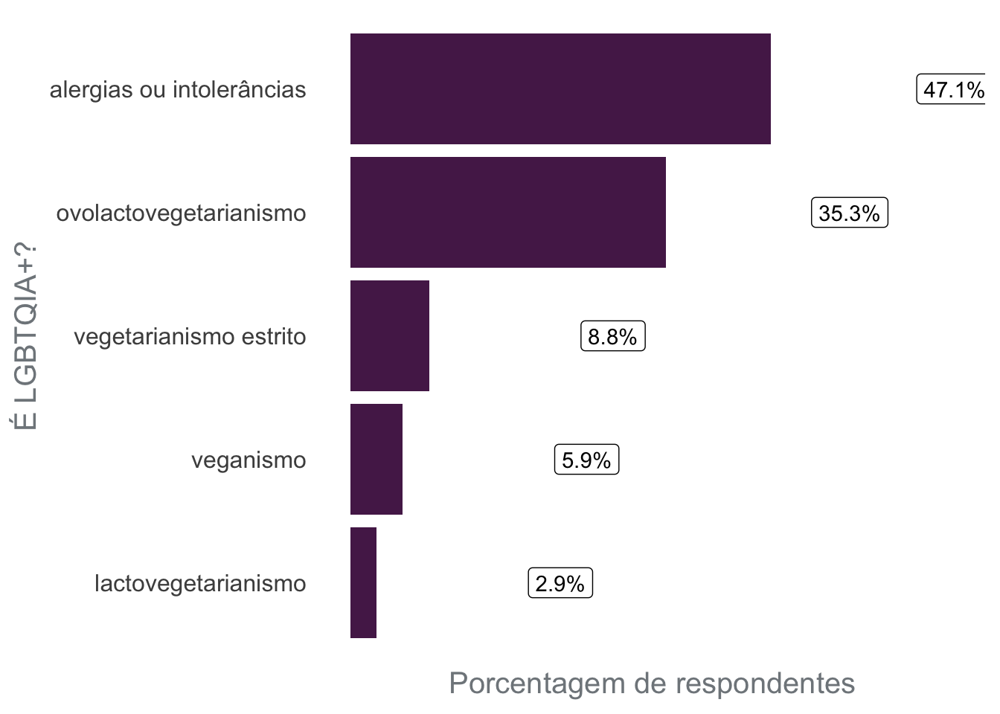

library(ggplot2)
rladies_theme <- theme_minimal(base_size = 15) +
theme(panel.grid.minor = element_blank(),
panel.grid.major = element_blank(),
plot.title.position = "plot",
plot.title = element_text(color = "#562357"),
text = element_text(color = "#80868b"),
axis.text.x = element_blank())
grafico_colunas <- function(dados, col, y_label){
dados |>
dplyr::rename(coluna = {{col}}) |>
dplyr::count(coluna) |>
dplyr::mutate(
porc = scales::percent(n/sum(n)) ,
coluna = forcats::fct_reorder(coluna, n)) |>
ggplot() +
aes(y = coluna, x = n) +
geom_col(fill = "#562457") +
labs(x = "Porcentagem de respondentes", y = y_label) +
geom_label(aes(x = n+7, y = coluna, label = porc)) +
rladies_theme
}Título do post
Subtítulo do post
Novidades
Tutorial
Eventos
# censo_2020_url <- "https://docs.google.com/spreadsheets/d/1ht53wO-qiWsrF3zLIn6DaENNLLjQGqleZL6E6g0lMTc/edit?resourcekey#gid=861397353"
#
# censo_2020_raw <- googlesheets4::read_sheet(censo_2020_url) |>
# janitor::clean_names()
#
#
# censo_2020 <- censo_2020_raw |>
# dplyr::select(
# de_acordo = 2,
# genero = 4,
# raca = 9,
# filhos = 11,
# deixou_ir_evento_filhos = 14,
# lgbt = 20,
# restricao_alimentar = 26,
# onde_mora = 32
# ) |>
# dplyr::filter(de_acordo == "Sim") |>
# dplyr::mutate(
# genero = dplyr::if_else(genero == "Feminino", "Mulher (cis ou trans)", genero)
# )
#
# readr::write_rds(censo_2020, file = "data/censo_2020.rds")
#readr::write_rds(censo_2020_raw, file = "data/censo_2020_raw.rds")
censo_2020 <- readr::read_rds("data/censo_2020.rds")
censo_2020_raw <- readr::read_rds("data/censo_2020_raw.rds")Resultados do Censo 2020
gênero
Problemas: não perguntamos coisaas que possam definir quantas pessoas trans temos nos eventos
censo_2020 |>
grafico_colunas(col = genero, y_label = "Gênero")
- Raca
censo_2020 |>
grafico_colunas(col = raca, y_label = "Cor/Raça")
censo_2020_raw$considerando_questoes_relacionadas_a_raca_voce_teria_alguma_sugestao_para_que_as_r_ladies_sejam_mais_inclusivas |>
tibble::as_tibble() |>
tidyr::drop_na() # A tibble: 58 × 1
value
<chr>
1 Eu sinto falta de inclusão de trans. Essas pessoas no geral estão fora do m…
2 Divulgar R-Ladies em grupos que abordam a questão racial, tais como a Univer…
3 Cotas
4 Buscar fazer parcerias e adotar estratégias de divulgação com foco em mulher…
5 Priorizar pessoas de cor preta (em lista de espera, principalmente) e contem…
6 Divulgar os cursos em grupos do Facebook de mulheres negras
7 Atividades voltadas especificamente a determinada demografia racial(conteúdo…
8 Acho que o difícil é conseguir vagas, é bastante concorrida as vagas para cu…
9 Dar preferência nas inscrições pra minorias
10 Não
# ℹ 48 more rowsSugestões relacionadas à raça: - Divulgar R-Ladies em grupos que abordam a questão racial - Cotas - Bolsas - Convidar pessoas negras para palestrar - Divulgar estatísticas do grupo sobre esse gap de representatividade - Eventos focados com a temática de raça - Eventos em regiões periféricas - Cursos focados em mulheres negras - mulheres negras na organização
- mães/pais
censo_2020 |>
grafico_colunas(col = filhos, y_label = "Tem filhos?")
# censo_2020 |>
# dplyr::filter(filhos == "Sim") |>
# grafico_colunas(col = deixou_ir_evento_filhos, y_label = "")censo_2020 |>
dplyr::count(filhos)# A tibble: 2 × 2
filhos n
<chr> <int>
1 Não 140
2 Sim 21# A tibble: 2 × 2
deixou_ir_evento_filhos n
<chr> <int>
1 Não 5
2 Sim 16Sugestões maternidade:
- Espaço Kids
- Gravar eventos
- Transmissão online
censo_2020_raw$considerando_questoes_relacionadas_a_maternidade_voce_teria_alguma_sugestao_para_que_as_r_ladies_sejam_mais_inclusivas |>
tibble::as_tibble() |>
tidyr::drop_na() # A tibble: 16 × 1
value
<chr>
1 "Dar preferência a espaços que permitam levar crianças."
2 "Buscar sempre ter \"espaço kids\" nos eventos e divulgar isso."
3 "Quem sabe uma \"creche\" ou monitores(as) de entretenimento para as criança…
4 "idealmente espaço kids, mas estimular a presença de crianças já seria excel…
5 "Locais que permitam crianças e voluntarias possam ajudar a ficar com elas"
6 "Gravar os encontros e disponibiliza-lós na internet para que possamos assis…
7 "Transmissão dos meetups online"
8 "eventos fora de fim de semana"
9 "unto aos eventos ter algum monitor para crianças"
10 "Poder levar os filhos"
11 "Incorporar na negociação com as empresas a informação de que é possível que…
12 "Espaços que seja possivel ir com uma criança. Rede de apoio às mães para au…
13 "Realizar eventos em horários acessíveis e contar com voluntárias para ficar…
14 "Quem sabe um berçario/creche ou tomadora de conta para aquelas que tenham q…
15 "Quantos mais encontros virtuais, maior a inclusão. Não só pelo gênero, mas …
16 "Eventos com espaço para crianças" - LGBT
censo_2020 |>
grafico_colunas(col = lgbt, y_label = "É LGBTQIA+?")Sugestões: - O nome dá a entender que o grupo é para mulheres apenas - Maior participação de pessoas trans/não binárias - Divulgação
- Alimentação
censo_2020 |>
tidyr::separate_longer_delim(cols = restricao_alimentar, delim = ", ") |>
tidyr::drop_na(restricao_alimentar) |>
grafico_colunas(col = restricao_alimentar, y_label = "É LGBTQIA+?")
Sugestões: - Incentivar o grupo a cada uma levar seu copo - Ter comidas veganas e vegetarianas - Ter indicação de que a comida é vegetariana/vegana
- Região
censo_2020 |>
dplyr::count(onde_mora, sort = TRUE) # A tibble: 9 × 2
onde_mora n
<chr> <int>
1 São Paulo Capital / Zona Sul 37
2 São Paulo Capital / Zona Oeste 36
3 São Paulo Capital / Centro 25
4 São Paulo Região Metropolitana / Grande São Paulo 21
5 São Paulo Capital / Zona Leste 12
6 Outro estado 11
7 São Paulo Capital / Zona Norte 11
8 Cidade fora da Grande São Paulo (interior ou litoral) 7
9 Centro - São Paulo capital 1